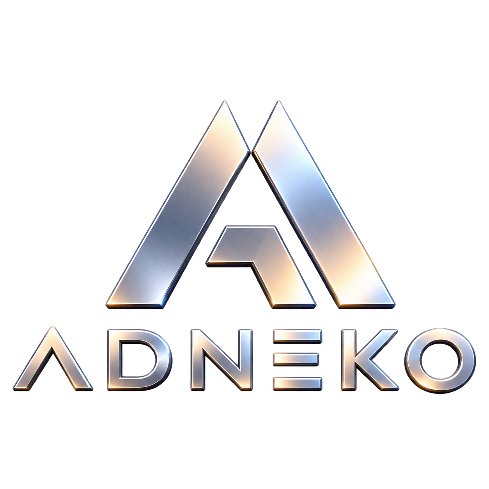
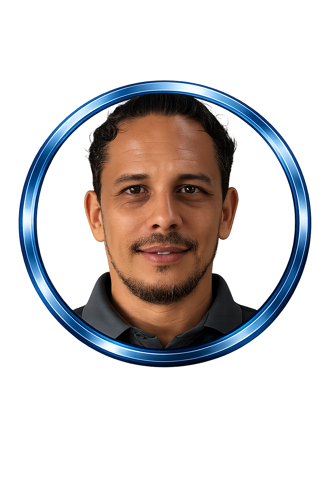
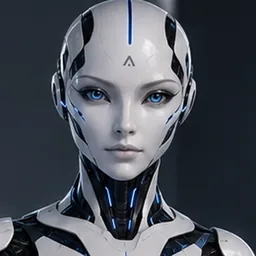

FUNDADOR / SISTEMA E IA

ADNEKO se ubica en Pérez Zeledón, Costa Rica.
Somos una empresa tecnológica AI-native.
ADNEKO no es una empresa tradicional que simplemente utiliza inteligencia artificial. La inteligencia artificial, los agentes autónomos, la automatización y los sistemas inteligentes están en el centro de cómo diseñamos la empresa desde su origen.

Nuestra visión va más allá de desarrollar productos tecnológicos.
ADNEKO está construyendo y demostrando un nuevo modelo de empresa tecnológica: una organización donde personas especializadas, inteligencia artificial, agentes autónomos, software, hardware, automatización y sistemas inteligentes trabajan de forma coordinada dentro de una misma arquitectura.
No construimos productos aislados.
Desarrollamos apps, soluciones SaaS, ecosistemas digitales y territoriales, sistemas de booking, plataformas operativas, medios digitales como Magazine del Sur y sistemas como Magazine OS, además de otras soluciones tecnológicas diseñadas para resolver necesidades concretas de empresas, organizaciones y territorios.
Desarrollamos sistemas capaces de integrarse entre sí, compartir capacidades y evolucionar como parte de una infraestructura común.
ADNEKO es además nuestro primer laboratorio real. Desarrollamos nuestras tecnologías, las utilizamos dentro de nuestra propia organización, las llevamos a producción, observamos su comportamiento, las corregimos, las mejoramos y las hacemos madurar antes de escalarlas y comercializarlas.
Integramos inteligencia artificial, software, hardware, automatización, datos, comunicación, visión, voz y robótica dentro de arquitecturas conectadas, escalables y preparadas para evolucionar.
Nuestro objetivo es reducir progresivamente los procesos manuales, ampliar la capacidad de las personas, aumentar la capacidad operativa y permitir que empresas y organizaciones evolucionen continuamente junto con la inteligencia artificial.
ADNEKO construye hoy la infraestructura, los sistemas y los modelos que formarán parte de la empresa del futuro.

